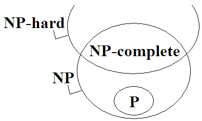
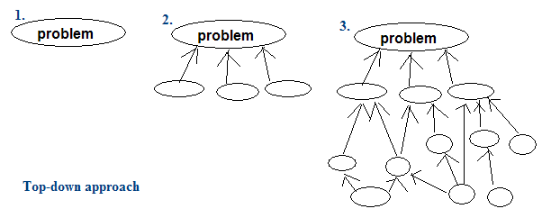
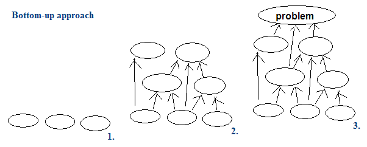

Algorithm（Under Construction!）
Algorithm
Time Complexity（Under Construction!）
時間複雜度
想要描述一個演算法執行速度有多快，最直覺的方式是測量演算法計算時間，另一種方式是統計演算法步驟數目。由於執行時間深受機械規格與實作方式影響，難以放諸四海皆準，因此學術上傾向於統計演算法步驟數目。一般都是統計加減乘除的次數。
時間複雜度標記法
時間複雜度的標記法，是幾十年前的數學家發明的一種方式：大寫的英文字母O函數代表演算法執行步驟數目上限，大寫的希臘字母Ω函數代表下限，大寫的希臘字母Θ函數代表同時滿足上限與下限（也就是不多不少剛剛好）。這些都是假設N無限大的情況，又由於N無限大，所以我們只需比較函數的最高次方項，另外我們省略了最高次方項的係數。
N無限大。無限大對數學家來說是司空見慣，然而對程式設計師來說卻是天方夜譚。什麼時候程式設計師才會遇到無限大的測試資料呢？遇不到。真實世界中根本不可能把無限大的測試資料輸入到程式之中。不管是什麼堅忍不拔、屹立不搖的程式，總還是有那麼一天，發生了停電、當機、人為更新設備，而把程式中止了，造成程式沒時間吃進無限多的測試資料。真實世界也沒有那麼大的記憶體能夠一口氣讀進無限多筆資料。
N無限大是不可能的，但是有可以類比為N無限大的情況。例如作業系統的程式，例如網路應用程式，持續執行個一年半載都不停，含辛茹苦不眠不休地處理資料。一有測試資料就趕快解決掉，當做好像沒有發生過一樣，乍看是無限多筆測試資料，實際上卻是同一個步驟執行無限多次。這時候用時間複雜度的標記法，用來判斷演算法快慢，是一個不錯的指標。然而還是要小心，當兩個演算法時間複雜度一樣，兩者的速度也可能相去甚遠，因為最高次方項的係數根本就被忽略了。
一般在單機上跑沒幾秒鐘就會結束的程式，只餵那少少的測試資料，要拿時間複雜度來評定演算法快慢，那就有點扯了。N=5的情況下，說不定 O(N^3)的演算法表現的比O(N^2)好。設計一個O(N)的演算法，在N=5的情況下反而跑的比O(N^2)的演算法還慢。兩個同為O(N)的演算法可能不一樣快，N大時甲快、N小則乙快。
測試資料
當測試資料很亂，那我們可以說平均的時間複雜度多少；當測試資料很整齊，那我們可以說最佳與最壞的時間複雜度為多少。例如Quicksort，最佳O(N)，平均O(N*logN)，最差O(N^2)。另外還想講一件事：最佳、平均、最壞跟omega、theta、O沒有關係，不知道為什麼很多人覺得它們是對應的。
Smoothed Analysis則是分析測試資料有多少機率是整齊的、多少機率是亂的。
演算法的步驟數目不是固定的
Probabilistic Analysis和Amortized Analysis和Competitive Analysis。
記憶體
有一類的演算法叫做Cache-oblivious Algorithm：
http://www.catonmat.net/blog/mit-introduction-to-algorithms-part-fourteen/
http://courses.csail.mit.edu/6.851/spring10/lec.html
再者，時間複雜度的標記法，完全忽略了處理I/O和記憶體管理的問題。要是資料結構複雜一點、龐大一點，讀取資料就會變得比較慢，就算是時間複雜度比較低的演算法，也可能慢得嚇死人。時間複雜度的標記法也沒有考慮程式語言特性和平台特性。平平同一個演算法，用C寫的通常就比用Java的跑得快。
時間複雜度標記法再怎麼不可靠，也比不上實作的不可靠。平平同一個演算法，不同人寫出來的程式碼也可能執行效率不一樣，差十倍都是有可能的。
當今電腦計算能力的極限
也許各位已經聽聞過當今七大數學難題之一「P=NP問題」。目前的電腦運算能力其實差強人意，絕大多數的問題都沒辦法快速地求解。就算找來大量電腦實施平行計算，依然沒辦法快速地求解。
然而，現代人類對於電腦有著神祇般的依賴，各種日常生活問題都祈望電腦能夠幫上忙。於是近似演算法出現了，用來求得一個馬馬虎虎差不多的答案。
最佳排列、最佳組合
「窮舉所有排列」目前不存在多項式時間的演算法。「窮舉所有組合」目前有偽多項式時間的演算法。
Turing Machine（Under Construction!）
Turing Machine
decision problem: 答案為是、不是的問題。 世上幾乎所有問題都可轉化做decision problem，除了paradox詭辯之外。 詭辯：我說的話是謊話。 NP problem: 不知道怎麼決定答案， 但有了一組關於答案的資訊之後便可以輕易以poly. time驗證答案正不正確。 屬於decision problem的子集合。
有三種決定下一個state的方式： deterministic: 可確定下一個state是哪一個。不管這個程式重複幾次結果都會一樣。 probabilistic: 由機率決定下一個state是哪一個。類似於markov model決定下一個state的方式。 nondeterministic: 由於不知道下一個state是哪一個，所以只得每個state都去看看。
nondeterministic polynominal time: 每個state都去去看。走到底之後，只需要用poly. time來驗證這個路線對不對。 (每走過一個state當然也都是poly. time) decidable: 可用algorithm來決定結果。 也就是說只要用turing machine就可以算出結果。 現在的computer能做的事情，turing machine都做得到。 http://episte.math.ntu.edu.tw/articles/mm/mm_10_2_04/
P & NP
示意圖
P問題
用多項式時間演算法能夠計算答案的問題。
「找出一群數字當中最大的數字」是P問題。
P的全名是Polynomial time。通常以「P」表示所有P問題構成的集合。
NP問題
用指數時間演算法能夠計算答案的問題，同時，用多項式時間演算法能夠驗證答案的問題。
由於P問題也可以改用指數時間演算法計算答案、當然可以用多項式時間驗證答案，故P問題都屬於NP問題。
「找出一張圖的一條Hamilton Path」是NP問題。 計算答案： 窮舉所有可能的路線，一條一條驗證。 是指數時間演算法。 驗證答案： 給定一條可能的路線，就照著路線走，看看能不能走到每一點。 是多項式時間演算法。
「找出一張圖成本最小的那條Hamilton Path」不是NP問題。 計算答案： 窮舉所有可能的路線，一條一條驗證。 是指數時間演算法。 驗證答案： 就算給定一條可能的路線， 還是必須窮舉所有路線，一條一條驗證，才知道哪條路線成本最少。 是指數時間演算法。
值得一提的是，每一個NP問題，都可以設計出多項式時間演算法，轉換成另一個NP問題。換句話說，所有NP問題都可以用多項式時間演算法彼此轉換。
NP的全名是Non-deterministic Polynomial time，定義頗複雜，此處省略之。通常以「NP」表示所有NP問題構成的集合。
NP-complete問題
所有NP問題當中，最具代表性、層次最高、最難的問題。
NP-complete問題的各種特例，涵蓋了所有NP問題。只要有辦法解決NP-complete問題，就有辦法解決NP問題。
各個NP-complete問題都等價、都一樣難，可以用多項式時間演算法彼此轉換。現今已經找出上百個NP-complete問題了。
Complete的意義為：能夠代表整個集合的子集合。舉例來說，它就像是一個線性空間（linear space）的基底（basis）。
「判斷一張圖是否存在Hamilton Path」已被證明是NP-complete問題。
NP-hard問題
用多項式時間演算法轉換NP問題所得到的問題，同時，必須是跟NP-complete問題一樣難、還要難的問題。
NP-hard問題可能是：甲、NP-complete問題（是NP問題），乙、超出NP問題的複雜度，是更難的問題。
「找出一張圖成本最小的Hamilton Path」是NP-hard問題。 由「找出一張圖的一條Hamilton Path」這個NP問題， 用多項式時間把每條邊加上成本而得。 而且「找出一張圖成本最小的Hamilton Path」至少比NP-complete問題還難。
P = NP ?
這是資訊科學界的一個懸案。大意是說：到底NP問題能不能用多項式時間演算法解決呢？如果可以的話，那麼NP問題就都變成了P問題了。這意味著有一些花上幾十年幾百年算不出答案的問題，變得可以在幾分幾秒內計算完畢、得到答案。
有一個解決這個懸案的方向是：嘗試發明一個多項式時間演算法，解決某一個NP-complete問題。一旦找到了一個多項式時間演算法能夠算出某一個NP-complete問題的答案，我們可以將此NP-complete問題進行特例化得到所有NP問題，如此一來，所有NP問題就一定可以用多項式時間演算法算出答案了。
介於P與NP-complete之間的問題
Algorithm Class
Offline Algorithm / Online Algorithm
「離線演算法」是一口氣輸入所有資料之後，才能開始運行的演算法。例如Bubble Sort。
「在線演算法」是不需等待所有資料到達，就可以分時分段處理輸入的演算法。例如Insertion Sort。
有些「在線演算法」甚至可以即時提供目前所有輸入的正確輸出。例如Insertion Sort。
Static Algorithm / Dynamic Algorithm
「靜態演算法」是無法隨時修改、增加、減少原本的輸入資料，無法隨時查詢輸出的演算法。例如Dijkstra's Algorithm。
「動態演算法」是可以隨時修改、增加、減少原本的輸入資料，可以隨時查詢輸出的演算法。例如Binary Search Tree。
Exact Algorithm / Approximation Algorithm
「精確演算法」是計算結果絕對正確的演算法。
「近似演算法」是計算結果擁有誤差的演算法。
有許多問題無法快速計算正確答案。為了追求速度，就會設計「近似演算法」。
Cache-oblivious Algorithm
http://www.catonmat.net/blog/mit-introduction-to-algorithms-part-fourteen/
http://courses.csail.mit.edu/6.851/spring10/lec.html
Top-down / Bottom-up
「由上而下」由粗略的架構開始分析，逐步具體化，追溯出問題的細目。以生物分類法為例，其分類的層次由上往下依序為界門綱目科屬種，由粗略到清晰，此即是Top-down。
簡單來說，就是立下大綱後，再研究細節。
「由下而上」從基礎的條理開始綜合，逐步抽象化，建構起問題的綱要。以數學理論的推導過程為例，由簡單的基本假設，推論出高深的理論，此即是Bottom-up。
簡單來說，就是確定細節後，再整理大綱。
Inductive Method / Deductive Method
「歸納法」，一件一件的聚集很多知識後，可以推導出一個結論。例如我們若知道「得A肝人生是黑白的」、「得B肝人生是黑白的」、「肝指數高人生是黑白的」、……，我們可以歸納出「肝若不好人生是黑白的」。
「演譯法」，由一個龐大的事物，可以推導出一件一件的知識。例如我們若知道「肝若不好人生是黑白的」，就可以演譯出「得A肝人生是黑白的」、「得B肝人生是黑白的」、「肝指數高人生是黑白的」、……。
Computer
Quantum Computing
http://en.wikipedia.org/wiki/Quantum_computer
Optical Computing
http://en.wikipedia.org/wiki/Optical_computing
DNA Computing